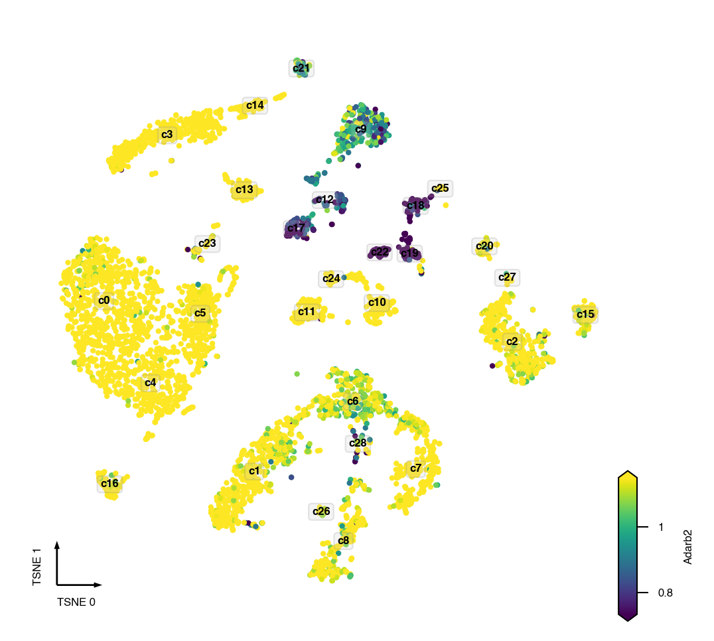
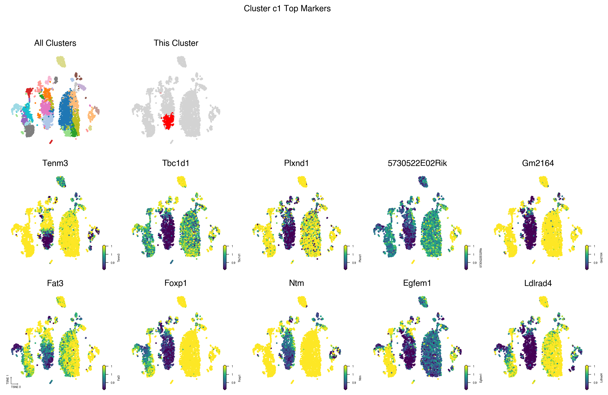

Plot Cluster DMGs
Contents
Plot Cluster DMGs¶
import pandas as pd
import anndata
import matplotlib.pyplot as plt
from ALLCools.plot import *
from ALLCools.mcds import MCDS
adata_path = '../step_by_step/100kb/adata.with_coords.h5ad'
cluster_col = 'L1'
downsample = 30000
mc_type = 'CHN'
coord_base = 'tsne'
cluster_dmg_path = 'L1.OneVsRestDMG.hdf'
Load¶
Clustering results¶
adata = anndata.read_h5ad(adata_path)
# downsample cells when plot - to use less memory
if downsample and (adata.n_obs > downsample):
use_cells = adata.obs.sample(downsample, random_state=0).index
adata = adata[adata.obs_names.isin(use_cells), :].copy()
else:
use_cells = adata.obs_names
Cluster DMGs¶
cluster_dmgs = pd.read_hdf(cluster_dmg_path)
cluster_dmgs.head()
| pvals_adj | fc | AUROC | cluster | |
|---|---|---|---|---|
| names | ||||
| ENSMUSG00000058325.6 | 1.010831e-176 | 0.517204 | 0.968014 | c17 |
| ENSMUSG00000106379.1 | 8.695325e-176 | 0.503299 | 0.966699 | c17 |
| ENSMUSG00000057315.14 | 2.695185e-175 | 0.559191 | 0.965909 | c17 |
| ENSMUSG00000048410.17 | 2.788084e-175 | 0.520144 | 0.965830 | c17 |
| ENSMUSG00000052613.16 | 1.398256e-171 | 0.620752 | 0.960779 | c17 |
Gene mC Fraction Data¶
gene_meta = pd.read_csv(f'GeneMetadata.csv.gz', index_col=0)
gene_name_to_gene_id = {v: k for k, v in gene_meta['gene_name'].items()}
gene_meta.index.name = 'gene_id'
gene_frac_da = MCDS.open(f'geneslop2k_frac.mcds',
use_obs=use_cells)[f'geneslop2k_da_frac']
gene_frac_da = gene_frac_da.sel(mc_type=mc_type).load()
gene_frac_da
<xarray.DataArray 'geneslop2k_da_frac' (cell: 16985, geneslop2k: 41871)>
array([[1.6991671 , 1.7433007 , 0.71863145, ..., 1. , 0.69835645,
1. ],
[0.65472096, 0.5947372 , 0.5717225 , ..., 1. , 0.4346478 ,
1. ],
[0.5538888 , 0.63673854, 0.5269188 , ..., 0.5246332 , 0.3255351 ,
1. ],
...,
[1.6366575 , 0.6676105 , 1.066267 , ..., 0.6373466 , 0.64334995,
1. ],
[2.9038475 , 2.7457557 , 1.4736292 , ..., 1. , 0.6865643 ,
1. ],
[0.5406686 , 0.37049064, 0.9384939 , ..., 1. , 1.6833304 ,
1. ]], dtype=float32)
Coordinates:
* cell (cell) <U10 '10E_M_207' '10E_M_338' ... '9J_M_2969'
* geneslop2k (geneslop2k) <U21 'ENSMUSG00000102693.1' ... 'ENSMUS...
geneslop2k_chrom (geneslop2k) <U5 'chr1' 'chr1' 'chr1' ... 'chrY' 'chrY'
geneslop2k_cov_mean (geneslop2k) float64 74.71 58.61 ... 1.367e+03 0.1074
geneslop2k_end (geneslop2k) int64 3076321 3104124 ... 90846039
geneslop2k_start (geneslop2k) int64 3071252 3100015 ... 90835412
mc_type <U3 'CHN'
strand_type <U4 'both'Plot¶
def get_gene_values_by_name(gene_name):
data = gene_frac_da.sel(geneslop2k=gene_name_to_gene_id[gene_name]).to_pandas()
data.name = gene_name
return data
Plot Single Gene¶
gene = 'Adarb2'
hue_norm = (0.67, 1.5)
coord_base = 'tsne'
fig, ax = plt.subplots(figsize=(4, 4), dpi=300)
_ = continuous_scatter(ax=ax,
data=adata.obs,
hue=get_gene_values_by_name(gene),
hue_norm=hue_norm,
text_anno=cluster_col,
coord_base=coord_base,
max_points=None,
s=4)

Plot Cluster Top Markers¶
def plot_cluster_and_genes(cluster, cell_meta, cluster_col, genes_data,
coord_base='umap', ncols=5, axes_size=3, dpi=150, hue_norm=(0.67, 1.5)):
ncols = max(2, ncols)
nrows = 1 + (genes_data.shape[1] - 1) // ncols + 1
# figure
fig = plt.figure(figsize=(ncols * axes_size, nrows * axes_size), dpi=dpi)
gs = fig.add_gridspec(nrows=nrows, ncols=ncols)
# cluster axes
ax = fig.add_subplot(gs[0, 0])
categorical_scatter(data=cell_meta,
ax=ax,
coord_base=coord_base,
axis_format=None,
hue=cluster_col,
palette='tab20')
ax.set_title('All Clusters')
ax = fig.add_subplot(gs[0, 1])
categorical_scatter(data=cell_meta,
ax=ax,
coord_base=coord_base,
hue=cell_meta[cluster_col] == cluster,
axis_format=None,
palette={
True: 'red',
False: 'lightgray'
})
ax.set_title('This Cluster')
# gene axes
for i, (gene, data) in enumerate(genes_data.iteritems()):
col = i % ncols
row = i // ncols + 1
ax = fig.add_subplot(gs[row, col])
if ax.get_subplotspec().is_first_col() and ax.get_subplotspec().is_last_row():
axis = 'tiny'
else:
axis = None
continuous_scatter(ax=ax,
data=cell_meta,
hue=data,
axis_format=axis,
hue_norm=hue_norm,
coord_base=coord_base)
ax.set_title(f'{data.name}')
fig.suptitle(f'Cluster {cluster} Top Markers')
return fig
Per Cluster Plots¶
cluster_dmgs.head()
| pvals_adj | fc | AUROC | cluster | |
|---|---|---|---|---|
| names | ||||
| ENSMUSG00000058325.6 | 1.010831e-176 | 0.517204 | 0.968014 | c17 |
| ENSMUSG00000106379.1 | 8.695325e-176 | 0.503299 | 0.966699 | c17 |
| ENSMUSG00000057315.14 | 2.695185e-175 | 0.559191 | 0.965909 | c17 |
| ENSMUSG00000048410.17 | 2.788084e-175 | 0.520144 | 0.965830 | c17 |
| ENSMUSG00000052613.16 | 1.398256e-171 | 0.620752 | 0.960779 | c17 |
cluster = 'c1'
genes = cluster_dmgs[cluster_dmgs['cluster'] == cluster].sort_values(
'AUROC', ascending=False)[:10]
genes_data = gene_frac_da.sel(geneslop2k=genes.index).to_pandas()
genes_data.columns = genes_data.columns.map(gene_meta['gene_name'])
fig = plot_cluster_and_genes(cluster=cluster,
cell_meta=adata.obs,
cluster_col=cluster_col,
genes_data=genes_data,
coord_base='tsne',
ncols=5,
axes_size=3,
dpi=250,
hue_norm=(0.67, 1.5))
fig.savefig(f'{cluster}.TopMarker.png', bbox_inches='tight')
